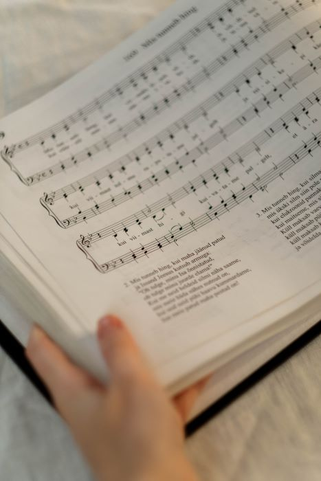

Music Theory Continued
The information below will go further into music theory as it relates to singing.

Whether at church or school, you've most likely heard a choir sing. What you may not know is that the members of the choir have different parts that they sing! The picture on the right shows what a choral piece of music might look like.
If you look closely, you can see there are collections of four different notes stacked on top of each other in groups of two. Each of these four notes goes with a voice parts from top to bottom: soprano, alto, tenor, and bass. These are the four
main voice types. Higher voices found in females sing either soprano or alto; conversely, males will sing tenor or bass. You may notice that two of the lines are in the treble clef and two are in the bass clef! The top line is the line which
the sopranos sing, and the line below that is the alto line. Moving into the bass clef, we have the tenor line on top and the bass line on the bottom.
People have different voice types for a variety of reasons, the most obvious being gender. *Please note that people are not limited to voice type or part, they can sing whatever they want to. Gender does not always determine voice type, however.
Men can sometimes sing comfortably quite high, and these are called countertenors. A countertenor would be able to sing an altos part with no trouble. Another voice type outside of the 'main four' is a baritone, another male voice type.
Baritones voices sit right between that of tenor and bass, meaning that they are not true basses or totally comfortable singing a tenors part, although they can sing notes withing both voice parts ranges. On the female side, a voice type outside of
alto and soprano is the coloratura soprano! Singers with this voice are able to sing extremely high, comfortably singing a high C and above. Many female singers are coloratura sopranos.

Hopefully the information above has given you a better idea of the basics of music theory as it relates to vocalizing.